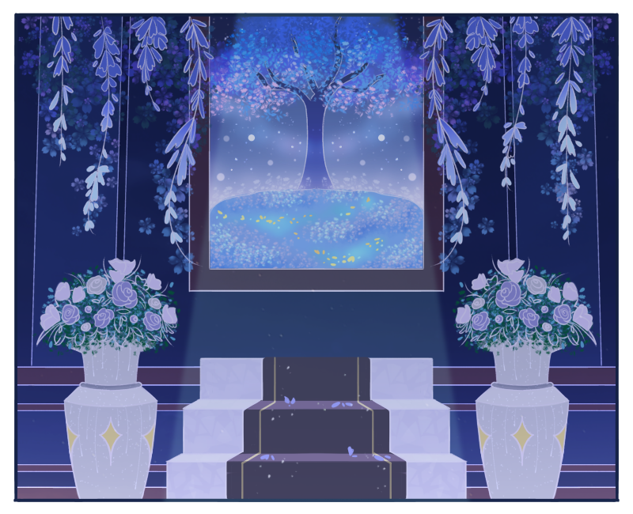
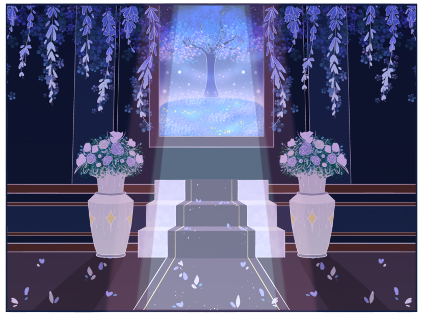

may all our dreams come true...
welcome! i'm juliana, an aspiring web developer!

Illusory Guide
...
▼
dear guests,
thank you so much for visiting! i hope my illusory guides don't frighten you, and i certainly hope you enjoy the experience!
i had a lot of fun creating this experience! if you're curious, here's what i used to make the website:
once again, thank you for visiting! may all our dreams come true, indeed. it certainly felt that way for me; even with all the imperfections, i'm still so happy to bring this silly creation to life!
best wishes,
Juliana
thank you so much for visiting! i hope my illusory guides don't frighten you, and i certainly hope you enjoy the experience!
i had a lot of fun creating this experience! if you're curious, here's what i used to make the website:
- Figma: designing and prototyping
- HTML, CSS (CSS and Tailwind), JavaScript (jQuery): implementing the design and associated logic
- ibisPaint X: drawing assets
- CSS Portal, W3Schools, etc.: guiding the implementation, especially with CSS and JavaScript/jQuery
once again, thank you for visiting! may all our dreams come true, indeed. it certainly felt that way for me; even with all the imperfections, i'm still so happy to bring this silly creation to life!
best wishes,
Juliana